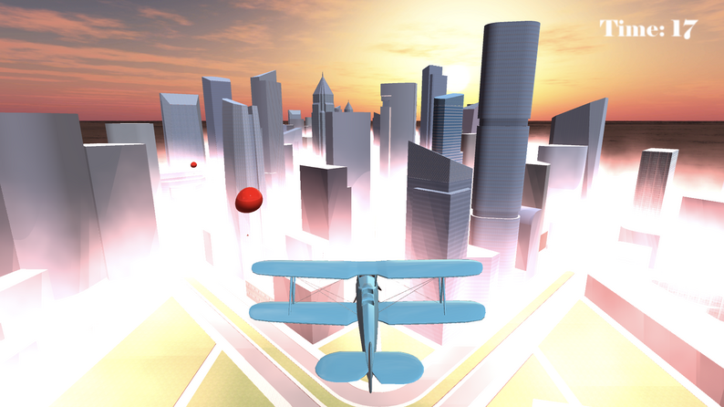
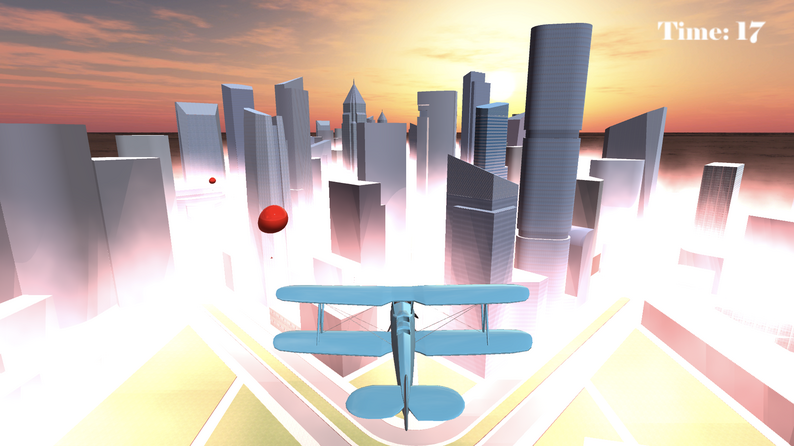

Sky Skater
description
The goal of this project is to create a unique player control other than simply walking around. Our design goal is to make a fast paced flying movement game. Players should be able to feel the satisfaction of speed when they are controlling the movement of the airplane crossing through the skyscrapers. Our aesthetic goal wants to recreate the scene of morning foggy high altitude when the sun just rises, and the top of the skyscraper shows above the clouds.
Click here to Play the Game 

Details within the Game

Responsibilities
Team Size: 2
-code for the plane control
-code for cauculating the score
-code for shooting
Reflections
I think overall it is a successful project. I made every function we wanted at first, working at the end. And, personally, I think it is fun to play. The teamwork is smoother than I thought, and we did not encounter much problem with github either. So I enjoyed this project very much.
Because of the limitation of time, our first attempt made the level way too hard for the first level, and after changing that, we did not have enough time for more levels. The calculator of the score system can have additional thoughts too.